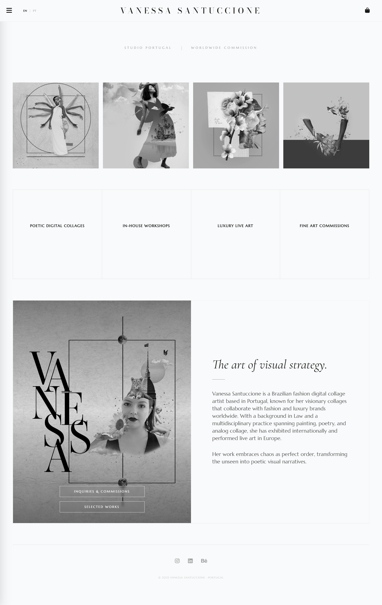
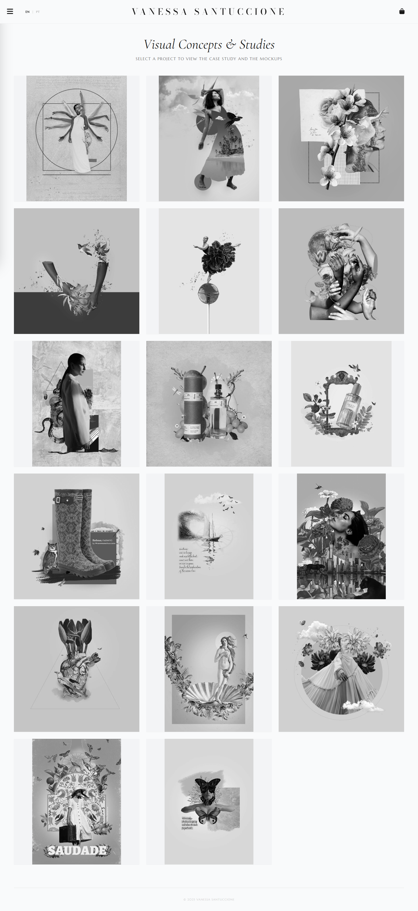

Como utilizei Engenharia de Prompts e Automação de QA para construir um ecossistema digital de luxo para uma artista plástica global.
Refletir o "Luxo Surrealista" através de uma stack técnica. Os requisitos: entrega ultra-rápida de imagens (WebP), SEO internacional (I18n) e responsividade visual absoluta em todos os dispositivos.
Ciclo de desenvolvimento orquestrado por IA. Usei agentes customizados para codificação semântica, Playwright para regressão visual automatizada e um motor de localização leve em JS para eliminar o overhead de frameworks pesados.
Geração de código orquestrada para garantir HTML5 semântico e uma arquitetura CSS enxuta e escalável.
Integração com Playwright para testes E2E automatizados, garantindo consistência visual em mais de 12 breakpoints.
Sistema de tradução em JS puro que permite troca de idioma com latência zero e preservação de metadados SEO.

Seção Hero com efeitos de glassmorphism e imagens WebP otimizadas para performance LCP.

Grid responsivo estilo masonry com transições suaves e implementação de lazy-loading.
Navegação otimizada para toque e layouts fluidos garantindo 100% de usabilidade em dispositivos móveis.
100/100
SEO Score
< 1s
FCP Time
0 KB
Framework Debt